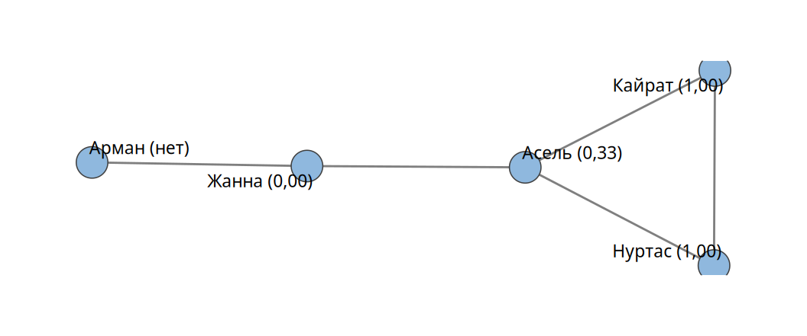
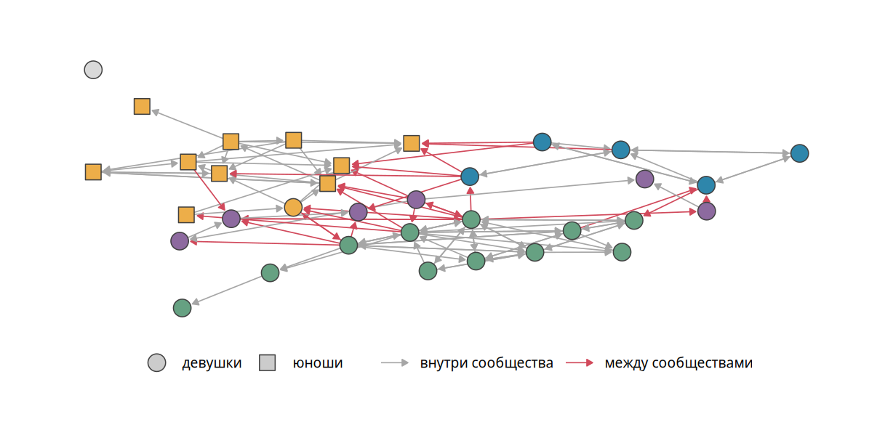

| девушкам | юношам | всего | |
|---|---|---|---|
| девушки | 74 | 14 | 88 |
| юноши | 2 | 23 | 25 |
4 Взаимность, гомофилия, кластеризация
В главах 2 и 3 мы описывали узлы и затем обобщали их характеристики до характеристик сети. Средняя степень, например, получается усреднением степеней узлов. В этой главе мы поступим так же со связями. Мы разберём три свойства, которые снова и снова обнаруживаются в социальных сетях. Связи часто взаимны. Связи чаще соединяют похожих людей. Друзья друзей часто сами оказываются друзьями. В конце главы мы посмотрим, как сеть распадается на сообщества.
4.1 Взаимность
Взаимность имеет смысл только в направленных сетях. Когда людей спрашивают о друзьях, часть номинаций оказывается безответной. Насколько часто это происходит?
Любую пару узлов называют диадой (dyad), независимо от того, связаны ли узлы. В направленной сети диада может находиться в одном из трёх состояний. Она бывает пустой, когда связей нет. Она бывает асимметричной, когда связь идёт только в одну сторону. Она бывает взаимной, когда связи идут в обе стороны. Подсчёт диад каждого типа называют переписью диад (dyad census). В школьной сети 23 взаимные диады, 67 асимметричных и 471 пустая.
ЗаметкаОпределение
Коэффициентом взаимности (reciprocity) называют долю связей, у которых есть ответная связь. Если \(M\) означает число взаимных диад, а \(L\) означает число связей, то \[ r = \frac{2M}{L}. \]
Формула читается так: удвоенное число взаимных диад, деленное на число связей. Двойка в числителе появляется потому, что каждая взаимная диада состоит из двух связей. Например, если в сети 10 связей и 3 взаимные диады, то \(r = 2 \cdot 3 / 10 = 0{,}6\): шесть связей из десяти получили ответ. В школьной сети \(r = 2 \cdot 23 / 113 = 0{,}407\): на 41% номинаций друзья ответили тем же. Встречается и другой вариант коэффициента: доля взаимных диад среди всех непустых, \(M / (M + A)\), где \(A\) означает число асимметричных диад. Для школьной сети он равен 0,256. Оба варианта лежат между 0 и 1. Сравнивать можно только значения, посчитанные одним способом.
Значение \(r = 0\) означает, что взаимных связей нет совсем. Так устроены сети цитирования: статья не может сослаться на статью, вышедшую позже, поэтому ответная ссылка почти невозможна. Значение \(r = 1\) означает полную симметрию.
Сам по себе коэффициент мало что говорит. Его смысл раскрывается в сравнении. В той же школе учеников спрашивали отдельно о друзьях и о лучших друзьях. В сети друзей взаимны около 40% номинаций, в сети лучших друзей около 75%. Лучший друг предполагает близость, которая редко бывает односторонней. Номинации на вопросы «кто тебе помогает с домашним заданием» и «кого ты считаешь популярным» почти не бывают взаимными. Тот, кто помогает, лучше разбирается в предмете. Популярных мало. Сами они редко называют тех, кто называет их. Неприязнь, напротив, обычно взаимна.
4.2 Гомофилия
Английская поговорка «birds of a feather flock together» соответствует русской «рыбак рыбака видит издалека». В сетевом анализе эту тягу к подобному называют гомофилией (homophily). У термина нет одного формального определения. Обычно им обозначают наблюдение: узлы с одинаковыми характеристиками связаны между собой чаще, чем были бы связаны случайно (McPherson и др. 2001 г.).
Примеров много. В США доля межрасовых браков среди белых составляла около 1%, среди чернокожих около 5%, среди американцев азиатского происхождения около 14% (Fryer 2007 г.). В американском опросе 1970-х годов лишь 10% мужчин назвали ближайшим другом женщину. Среди женщин мужчину назвали 32% (Verbrugge 1977 г.). Если бы пол не влиял на выбор друга, обе доли были бы близки к половине.
4.2.1 Матрица смешивания
В школьной сети гомофилия по полу видна невооружённым глазом (рис. 2.1). Её удобно оценить по матрице смешивания (mixing matrix). Строки матрицы соответствуют категории того, кто называет друга, столбцы соответствуют категории названного (табл. 4.1).
Девушки отправили 88 номинаций, из них 74 другим девушкам. Это 84%. Насколько это много? Девушек в классе 24, юношей 10. Если бы девушка выбирала друзей случайно, девушками оказались бы 23 из 33 одноклассников, то есть около 70%. Разница есть, но умеренная. У юношей картина другая. Из 25 номинаций лишь 2 пришлись на девушек. Внутри своей группы остались 92% номинаций юношей при ожидаемых 27%.
4.2.2 Паттерн и механизм
Почему похожие люди чаще связаны? Важно различать паттерн и механизм. Гомофилия есть паттерн: регулярность в данных. Её могут порождать разные механизмы.
Первый механизм связан с возможностями встреч. Люди с высшим образованием чаще знакомы друг с другом. Это не обязательно значит, что они предпочитают образованных. Они просто провели несколько лет в университете среди таких же студентов. Хобби, место работы, район проживания заранее сортируют людей по их характеристикам. Круг, из которого человек выбирает друзей, уже состоит из похожих на него. Такую гомофилию называют индуцированной (induced).
Второй механизм связан с выбором. Людям с общим опытом проще найти общий язык. Гендерная социализация формирует разные интересы у мальчиков и девочек. Мальчикам, которые с детства играют в футбол, легче разговаривать друг с другом. Такую гомофилию называют гомофилией выбора (choice homophily) (McPherson и Smith-Lovin 1987 г.). Иногда к выбору подталкивает прямое социальное давление: от семьи может требоваться брак внутри своего социального круга.
С возрастом гомофилия по полу обычно ослабевает. У десятилетних школьников она выражена гораздо сильнее, чем у шестнадцатилетних.
4.2.3 Коэффициент ассортативности
Для номинальных признаков (пол, класс, этническая группа) силу гомофилии измеряет коэффициент ассортативности (Newman 2003 г.):
\[ r = \frac{\sum_k e_{kk} - \sum_k a_k b_k}{1 - \sum_k a_k b_k}. \tag{4.1}\]
Здесь \(e_{kl}\) означает долю связей, идущих от узлов категории \(k\) к узлам категории \(l\), то есть элемент матрицы смешивания, деленный на число связей. Величины \(a_k = \sum_l e_{kl}\) и \(b_k = \sum_l e_{lk}\) означают доли связей, которые начинаются и заканчиваются в категории \(k\). Сумма \(\sum_k e_{kk}\) равна доле связей внутри категорий. Сумма \(\sum_k a_k b_k\) равна той же доле при случайном смешивании. Числитель показывает превышение над случайным уровнем. Знаменатель нормирует его так, чтобы при всех связях внутри категорий \(r = 1\). При \(r = 0\) признак не влияет на связи. Отрицательные значения означают гетерофилию: связи чаще соединяют разные категории.
Формулу проще понять на числах из табл. 4.1. Индекс \(k\) под знаком суммы пробегает категории, здесь их две: девушки и юноши. Доля связей от девушек к девушкам равна \(74 / 113 \approx 0{,}655\), от юношей к юношам \(23 / 113 \approx 0{,}204\). Внутри категорий проходит \(0{,}858\) всех связей. Девушки отправили долю связей \(a_f \approx 0{,}779\) и получили долю \(b_f \approx 0{,}673\). У юношей \(a_m \approx 0{,}221\) и \(b_m \approx 0{,}327\). При случайном смешивании внутри категорий проходила бы доля \(a_f b_f + a_m b_m \approx 0{,}596\). Подставив числа в формулу, получаем \(r \approx (0{,}858 - 0{,}596) / (1 - 0{,}596) \approx 0{,}649\).
В школьной сети ассортативность по полу равна 0,649. По самоотнесению к казахам она равна 0,10, к русским −0,03. Ученики выбирают друзей прежде всего по полу. Этническая гомофилия в этом классе практически отсутствует.
Полезно предсказывать знак ассортативности заранее. Дружба школьников и параллель: ассортативность высокая, большинство друзей учится в том же классе. Дружба и цвет глаз: около нуля, если только цвет глаз не служит признаком этнической принадлежности. Подотчётность на работе и возраст: ассортативность отрицательная, потому что начальник обычно старше подчинённого. Наставничество тоже гетерофильно: за советом идут к старшим.
Для числовых признаков (возраст, рост, доход) ассортативностью называют корреляцию Пирсона между значениями признака на двух концах связи.
4.3 Кластеризация
Вспомним поговорку «друзья моих друзей мои друзья». Посмотрим на сеть глазами одного узла, эго. Какая доля его друзей дружит между собой?
ЗаметкаОпределение
Локальным коэффициентом кластеризации узла \(i\) называют долю связанных пар среди всех пар его соседей: \[ Cl_i = \frac{2 L_i}{d_i (d_i - 1)}, \] где \(L_i\) означает число связей между соседями узла \(i\), а \(d_i\) означает его степень.
В числителе стоит удвоенное число связей между соседями узла. Из \(d_i\) соседей можно составить \(d_i (d_i - 1) / 2\) пар, поэтому знаменатель, деленный на два, равен числу пар соседей. Двойки в числителе и знаменателе сокращаются. Остаётся число связанных пар, деленное на число всех пар соседей. Например, у Асель три соседа и одна связь между ними: \(2 \cdot 1 / (3 \cdot 2) = 1/3\).
Если все соседи узла связаны между собой, коэффициент равен 1. Если не связана ни одна пара, он равен 0. Его можно читать как вероятность того, что два случайно выбранных друга эго дружат. Для узла с одним соседом коэффициент не определён: пар соседей нет.
В сети «Кайрат и Нуртас» (рис. 4.1) друзья Кайрата, Нуртас и Асель, дружат между собой. Поэтому \(Cl_{\text{Кайрат}} = 1\). То же верно для Нуртаса. У Асель три друга, а из трёх пар связана одна: \(Cl_{\text{Асель}} = 1/3\). Соседи Жанны, Асель и Арман, не связаны: \(Cl_{\text{Жанна}} = 0\). Для Армана коэффициент не определён.

Среднее локальных коэффициентов по узлам называют средним коэффициентом кластеризации сети. Для сети «Кайрат и Нуртас» он равен \((1 + 1 + 1/3 + 0)/4 \approx 0{,}58\). Есть и глобальный вариант, транзитивность: доля замкнутых троек среди всех троек вида «A связан с B, B связан с C». Он отвечает на вопрос, как часто путь длины два замыкается в треугольник. В школьной сети без учёта направления транзитивность равна 0,34. Треугольник замыкается примерно в каждом третьем случае.
Высокая кластеризация характерна для сетей дружбы. Друзья друзей встречаются на общих праздниках, их знакомят. Ещё выше кластеризация в сетях знакомств на социальных платформах. Платформа сама предлагает подружиться с друзьями друзей, а связь ничего не стоит. Кластеризация понижается, когда у человека несколько непересекающихся кругов общения: университетские друзья, коллеги, соседи. Сам по себе коэффициент, как и взаимность, интересен в сравнении. В главе 5 мы сравним кластеризацию школьной сети с кластеризацией случайной сети.
4.4 Сообщества и модулярность
Крупные коллективы часто распадаются на группы: в классе из тридцати человек складываются компании. Сообществом (community) называют группу узлов, внутри которой связей много, а между которой и остальной сетью связей мало.
Качество разбиения сети на группы измеряют модулярностью (Newman 2006 г.). Модулярность сравнивает долю связей внутри групп с той долей, которую можно было бы ожидать при случайном размещении связей:
\[ Q = \sum_k \left(e_{kk} - a_k b_k\right). \]
Под знаком суммы для каждой группы \(k\) из доли связей внутри группы \(e_{kk}\) вычитается доля \(a_k b_k\), которую дало бы случайное размещение связей. Положительная разность означает, что связей внутри группы больше, чем дал бы случай. Модулярность складывает эти превышения по всем группам. Значения выше 0,3 обычно считают признаком заметной структуры сообществ.
Обозначения те же, что в формуле 4.1, только вместо пола категорией служит номер группы. Модулярность совпадает с числителем коэффициента ассортативности. Можно сказать, что она измеряет гомофилию по принадлежности к группе.
Алгоритмы поиска сообществ ищут разбиение с наибольшей модулярностью. Перебрать все разбиения можно лишь в маленьких сетях. Для класса из 34 учеников это ещё возможно. Результат показан на рис. 4.2.

Оптимальное разбиение выделяет 5 групп с модулярностью 0,41. Все юноши класса попали в одно сообщество. Вместе с ними в него вошла одна девушка. Девушки распались на три компании. Пятую «группу» составляет изолированная ученица. Связей между сообществами немного, на рисунке они выделены цветом.
Для больших сетей используют приближённые алгоритмы. Их десятки. Нередко они дают разные ответы. В табл. 4.2 сравниваются оптимальный алгоритм, лувенский алгоритм, жадный алгоритм, алгоритм случайных блужданий и алгоритм ведущего собственного вектора из пакета igraph. Большинство из них работает только с ненаправленными сетями, поэтому направление связей перед их применением отбрасывают. Последний столбец показывает, насколько разбиение совпадает с оптимальным (скорректированный индекс Рэнда: 1 при полном совпадении, около 0 при случайном).
| Функция | Групп | Q | Совпадение |
|---|---|---|---|
cluster_optimal |
5 | 0,39 | 1,00 |
cluster_louvain |
6 | 0,39 | 0,78 |
cluster_fast_greedy |
6 | 0,39 | 0,70 |
cluster_walktrap |
6 | 0,38 | 0,64 |
cluster_leading_eigen |
4 | 0,33 | 0,32 |
Отсюда практический совет. Не стоит полагаться на один алгоритм. Лучше применить несколько и доверять тем группам, на которых они сходятся. Узлы, которые переходят из группы в группу, обычно находятся на границе сообществ.
Сообщества особенно интересно сопоставлять с формальными группами. В параллели девятых классов той же школы сообщества дружбы в основном совпадали с классами, но многие компании выходили за их границы. Неформальные группы, пересекающие формальные, связаны с тем, как учится и как чувствует себя ученик. Такие вопросы требуют уже не описания, а моделей.
4.5 В R
Перепись диад и коэффициент взаимности:
dyad_census(school)
reciprocity(school) # 2M / L
reciprocity(school, mode = "ratio") # M / (M + A)Ассортативность и кластеризация. Функция assortativity_nominal() ожидает категории в виде фактора или целых чисел. Для числовых признаков есть assortativity():
assortativity_nominal(school, factor(V(school)$sex), directed = TRUE)
transitivity(toy, type = "local") # NaN для узлов со степенью меньше 2
transitivity(toy, type = "average")
transitivity(as_undirected(school), type = "global")Функция as_undirected() отбрасывает направление. Аргумент mode решает, что делать с асимметричными связями: "collapse" превращает любую связь в ненаправленную, "mutual" оставляет только взаимные, "each" превращает каждую направленную связь в отдельную ненаправленную.
und <- as_undirected(school, mode = "collapse")
cl <- cluster_louvain(und)
membership(cl) # номер группы каждого узла
modularity(cl)
compare(cl, cluster_walktrap(und), method = "adjusted.rand")
plot(cl, und) # группы и межгрупповые связи4.6 Вопросы и упражнения
- В сети 100 направленных связей, 30 из них образуют 15 взаимных пар. Найдите оба варианта коэффициента взаимности. Что нужно знать дополнительно?
- Расположите по убыванию ожидаемой взаимности сети: дружба, лучшая дружба, помощь с домашним заданием, неприязнь, цитирование. Объясните порядок.
- Пусть юноши школьного класса отправили девушкам ещё 10 номинаций. Пересчитайте по табл. 4.1 коэффициент ассортативности по полу.
- Предложите сеть и признак, для которых ассортативность будет отрицательной.
- Как изменится средний коэффициент кластеризации сети «Кайрат и Нуртас», если добавить связь между Асель и Арманом?